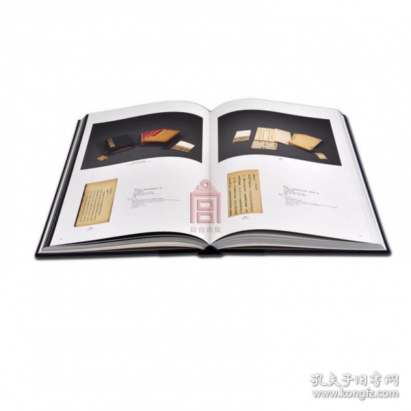
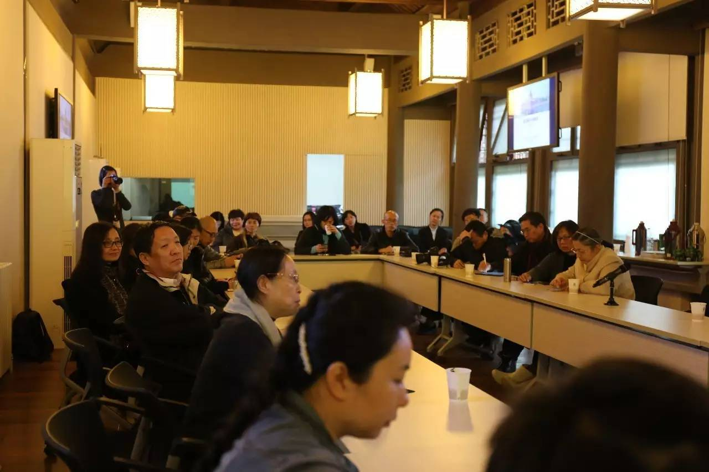

学术活动
学术活动

第一时间了解故宫学术研究最新动态

- 
- 
- 08 /14 · 故宫研究院赴四川乐山开展“故宫文物南迁乐山80周年纪念活动”调研筹备工作
- 08 /14 · 古书画鉴藏研究所王连起先生受邀在国家图书馆举办“我的游相兰亭研究”专题讲座
- 08 /14 · “新中国出土墓志整理与研究”项目组任昉应邀赴首博检查墓志工作
- 08 /14 · 故宫研究院古建筑研究所2019年第二季度（4-6月）学术工作新闻
- 08 /14 · 故宫研究院建筑与规划研究所为政府决策提供服务
- 08 /14 · 【讲座报道】两代潜龙，一朝摄政——醇贤亲王奕譞照片解读——故宫研究院学术讲坛...
关于故宫研究院
故宫研究院是故宫博物院设立的学术研究与交流的非建制机构，以创建“学术故宫”为宗旨、以服务“平安故宫”为指针，引领学术发展，制定科研规划，考评学术成果，实现故宫学术研究、人才培养、学术出版和对外交流等事业的可持续发展，努力发展成为国家级重大科研课题项目学术基地和研究中心。
更多机构建设
故宫研究院下设研究室、故宫学研究所、考古研究所、明清宫廷历史档案研究所、古文献研究所、古建筑研究所、宫廷戏曲研究所、明清宫廷制作技艺研究所、文博法治研究所、书画研究所、陶瓷研究所、藏传佛教文物研究所等十五个研究机构，另有故宫博物院博士后科研工作站。
更多科研成果
自去年故宫研究院成立以来，以其开放的学术胸襟、创新的机制接纳国内外学术界热心于故宫学术研究的人才，且与院内的专家学者共同构建高端学术研究平台，在故宫博物院初步形成覆盖全面、专业突出和梯次完备的学术团队，取得了一系列重大科研成果。
更多


关于故宫学院
故宫学院是一所业务培训和教育机构，也是国内首家以博物馆办学的模式成立的“学院”。故宫学院响应我国博物馆和文化遗产保护事业发展的最新形势和需要，围绕故宫博物院整体事业的发展，为博物馆发展提供专业人才支持，践行博物馆公众教育和社会服务的使命。
更多国内外交流合作
- 08 / 18 · 故宫学院（沈阳）正式成立暨...
- 08 / 18 · 独步千载、众星孤月：《千里...
- 08 / 18 · 清代宫廷服饰制度及其文化内...
- 08 / 18 · 中国古代玉器的鉴赏与收藏—...
- 08 / 18 · 故宫讲坛走进苏州第四十一讲...